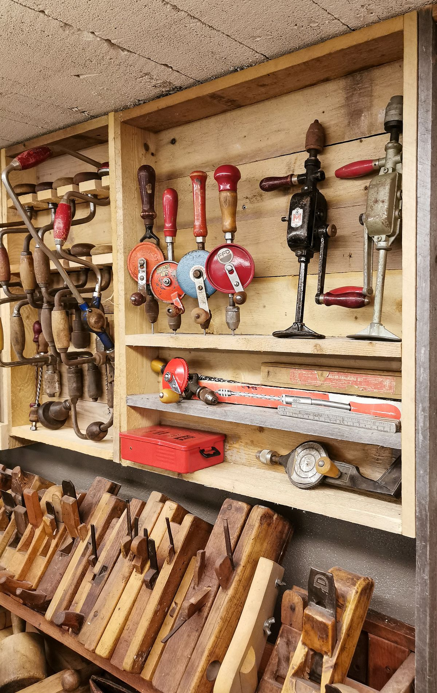

The maker, and how to look after the work
One pair of hands makes everything in this workshop. This page is who they belong to, what they work in — and the aftercare that a piece of solid timber actually needs, which is less than you fear and more than nothing.

Lars Vestergaard, snedker
I came to the trade the ordinary Danish way: a four-year apprenticeship as a snedkerlærling in a joinery in Viborg, sweeping up, then planing, then — in the fourth year — being trusted with a whole piece. The svendeprøve, the journeyman's examination piece, was a writing desk in cherry. It passed. It is still in use, and its drawers still fit, which at this distance feels like the real certificate.
After the journeyman years — two workshops in Jutland, one in Copenhagen — I opened this bench on Refshaleøen in 2016. The workshop is deliberately small: one bench, one maker, and an apprentice taken on every second year, because a trade that is not taught is a trade being wound down. Fourteen to eighteen pieces a year leave here. That is not a limitation I am trying to fix; it is the size at which I can still remember every joint in every piece I have made.
The principle under all of it is simple: a piece of furniture should be repairable by the person who owns it, and by a maker who has never seen it before. So the joints are traditional and knock-apart-able, the finishes are renewable with a kettle and a cloth, and every piece leaves with a page of notes — its timber, its finish, and how both were done — so that in sixty years a stranger with a bench can put it right.
Four timbers, and why these four
The workshop buys European timber from Danish and German sawmills, as boards, and seasons it in the loft. Nothing exotic, nothing air-freighted: a short journey is part of the material's honesty.
| Timber | Character | Used for | Notes |
|---|---|---|---|
| Oak | Hard, open-grained, patient. Takes a century of dinners without flinching. | Table tops, café and dining chairs, bookcases | Bought as whole boards from one tree for each top, so grain runs continuously. |
| Ash | Pale, springy, turns and bends beautifully. The workshop's favourite. | Spindle-back chairs, benches, stools | Danish-grown where possible. Steam-bends and holds a wedged tenon superbly. |
| Birch | Fine, even, quiet — the timber that lets a room's other things speak. | Cabinets, drawers, interior pieces | Takes a soap finish very evenly. Drawer sides are often birch whatever the carcass is. |
| Cherry | Warm, and darkens with light for years — a piece in cherry is a slow photograph. | Benches, desks, small pieces | European cherry only. Clients are warned: the colour at delivery is not the colour at year five. |
Care and repair
Every piece leaves the workshop with these instructions on paper. They are published here so a second owner — or a future repairer — has them too.
Renewing a soap finish
Once or twice a year, or when the surface looks thirsty. Dissolve pure soap flakes in hot water, wring a cloth out hard in the solution, and wipe with the grain. Let it dry, buff lightly. Rings and pen marks usually come out with the same treatment and a little patience.
50 g soap flakes (sæbespåner)
1 litre hot water
2 soft cotton cloths — one to apply, one to buff
Oil and hardwax-oil care
Wipe spills when you notice them, not in a panic — the finish gives you time. Once a year, clean the surface, apply a thin coat of the same oil the piece left with (it is named in its notes), wipe off the excess after fifteen minutes, and let it cure overnight. Thin is the whole secret: oil left thick goes tacky and collects dust.
Raising a dent
A dent is compressed fibre, not missing wood, and it can often be steamed back. Lay a damp cloth over the dent and touch it with a hot iron for a few seconds at a time; the steam swells the fibres back toward level. Test on an underside first, work in small passes, and stop when it stops improving — the last half-millimetre is the wood's memory, and it is allowed to keep it.
Room climate
Solid timber moves with the air. A room held between roughly 40% and 60% relative humidity keeps movement gentle; a table against a radiator in a dry winter room will tell you about it by spring. Felt pads under feet, coasters under nothing in particular — common sense, briefly applied, is the entire regime.
Cord seats
Woven seats last fifteen to twenty-five years of daily use. When one finally sags, it comes back to the workshop and is re-woven in a day, to the original pattern, for the price of the cord and the day — currently 1,900 kr. Never varnish a cord seat; it makes the eventual repair harder and the sitting worse.
The repair promise
Any piece from this workshop can come back to the bench, whoever owns it and however it was damaged — including damage with a good story. Structural repairs are charged at bench cost; the first repair of a joint that has loosened in honest use is free, forever, because a joint that loosens was partly the maker's decision. Offcuts from your timber are kept for ten years so repairs match.
Questions about a piece you own?
Repairs and advice are part of the work, not an afterthought. Write, with a photograph.
or write directly: vaerksted@vestergaard-form.example